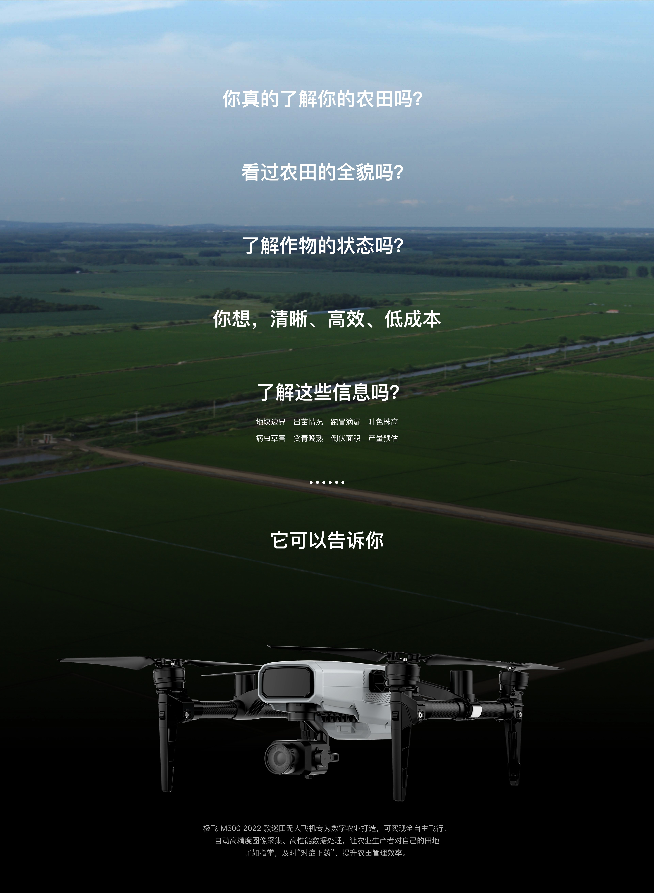
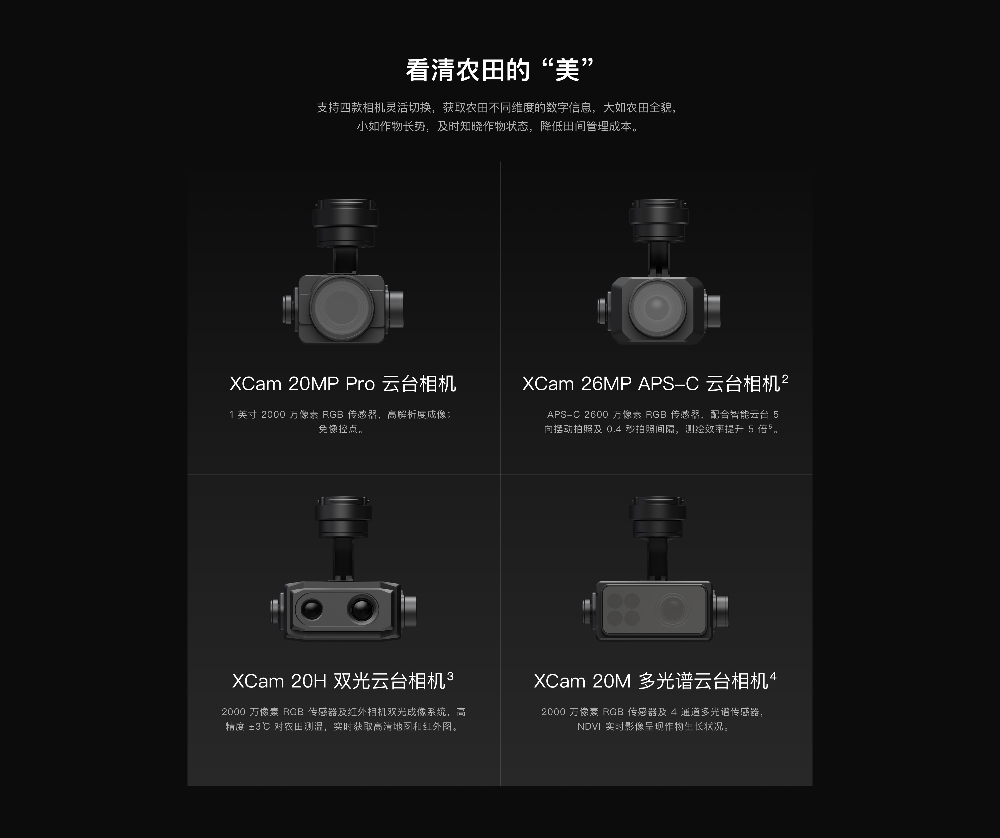
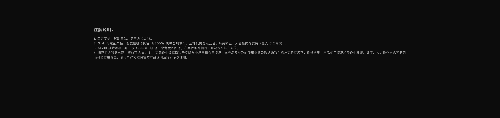
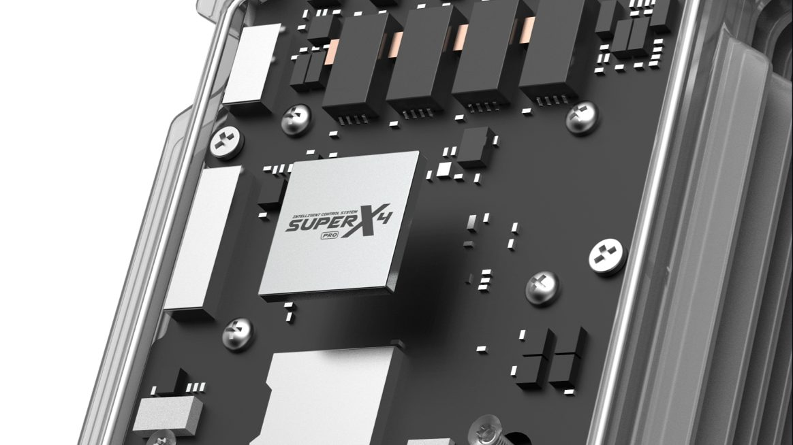

包含飞行平台、电池与 SRC1 遥控器，适合按项目需求扩展。

Complete Specs
完整参数
以下数据整理自 XAG 官网公开参数页，具体版本与规格以官方最新信息为准。
- 平台类型
- 航测 / 多用途无人机
- 最大水平速度
- 10 m/s（航线模式）
- 最长飞行时间
- 45 分钟（未挂载相机）
- 最大起飞海拔
- 6000 m
- 抗风等级
- 4 级风
- 云台相机
- XCam 20Mp Pro / 26Mp APS-C
- 专业相机
- XCam 20M 多光谱 / 20H 双光
- 相机续航
- 挂载相机约 36-38 分钟
- 定位系统
- 多频多系统高精度 RTK GNSS
- 智能电池
- 6000 mAh / 9000 mAh
- 遥控器
- 极飞 SRC1 智能遥控器
- 工作温度
- 0-40 ℃
- 适用场景
- 航测建模、巡检、多光谱农业数据采集
Price Plan
配置方案
极飞 M500 按机身、相机、电池与作业场景组合报价。
可搭配 XCam 20Mp Pro、26Mp APS-C、多光谱或双光相机。
Materials
相关素材
从航野视界官方图库中精选的极飞 M500 相关影像。





数据来源：XAG 官网 M500 参数页；价格、参数与图片以官方最新信息为准。
返回航野视界首页